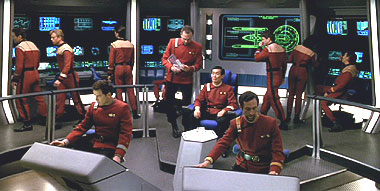
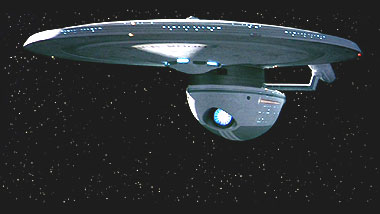
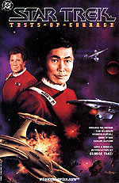
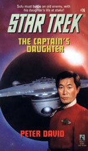
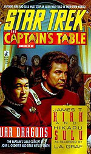
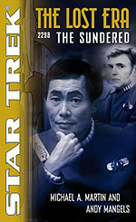

| por
Gustavo Leo
 Nessa
era de prequels e reboots, existem duas caractersticas que
marcam os trekkies do mundo inteiro: reclamar muito e reclamar mais ainda. De
Rick Berman a J.J. Abrams, ningum escapa das criticas ferrenhas dos fs de Jornada. Reclamam quando o filme bom
e sucesso de bilheteria, e ainda reclamam quando o filme ruim e fracasso. Reclamam
quando a srie de TV est boa e reclamam quando ela est ruim. Reclamam quando
seu personagem favorito morre, mas reclamam tambm quando ele ressuscitado.
Bom, deu para ter uma idia do que estou falando, no ? E c estou eu, reclamando
das reclamaes dos trekkies (mas ei, eu no sou trekkie!). Nessa
era de prequels e reboots, existem duas caractersticas que
marcam os trekkies do mundo inteiro: reclamar muito e reclamar mais ainda. De
Rick Berman a J.J. Abrams, ningum escapa das criticas ferrenhas dos fs de Jornada. Reclamam quando o filme bom
e sucesso de bilheteria, e ainda reclamam quando o filme ruim e fracasso. Reclamam
quando a srie de TV est boa e reclamam quando ela est ruim. Reclamam quando
seu personagem favorito morre, mas reclamam tambm quando ele ressuscitado.
Bom, deu para ter uma idia do que estou falando, no ? E c estou eu, reclamando
das reclamaes dos trekkies (mas ei, eu no sou trekkie!).
Nos
ltimos anos, as reclamaes dos trekkies se transformaram em uma forma de reivindicao
muito singular: as fan campaign, ou
em bom portugus, campanhas de fs. Criadas por grupos bem organizados, tais campanhas
consistem de todo tipo de recursos como abaixo-assinados, sites com cadastros
a downloads, passeatas, anncios em jornais hollywoodianos como o Variety e por
ai vai. Os exemplos so muitos: quem no se lembra da campanha Bring Back Kirk,
que clamava para o retorno de William Shatner ao papel de capito Kirk em um novo
filme ou episdio das sries televisivas ? A campanha chegou at a produzir um
trailer de 8 minutos com altssima qualidade tcnica (eu mesmo exibi o tal trailer
em um evento de quadrinhos aqui em Belo Horizonte, e
a galera presente na platia adorou e pediu bis). J
a campanha DS9 Relauch pedia atravs de um abaixo assinado a volta de Deep Space Nine como filmes para o cinema
ou TV. A campanha Save Enterprise, organizada pelo grupo Trek United, arrecadou
milhes de dlares para pagar uma nova temporada de Enterprise na UPN tiveram que devolver
todo o dinheiro. E finalmente existe tambm a Excelsior Campaign, campanha que
visava o retorno do dubl de ator e ativista gay George Takei como o capito Hikaru
Sulu e sua tripulao da USS Excelsior em uma nova srie de TV intitulada (voc
adivinhou) Star Trek Excelsior. A campanha ganhou espao na mdia quando o prprio
Takei de tornou seu porta-voz e garoto propaganda, dando voz, fosse em convenes
ou na mdia, para o retorno de seu personagem em uma nova srie de TV. 
O
ano era 1996 e Voyager comemorou os
30 anos da franquia com o fraqussimo episdio Flashback (escrito pelo... aham... gnio de Brannon Braga. Tinha
de ser ele.). O episdio trazia de novo Takei e Grace Lee Whitney aos papeis de
Sulu e Rand na nave estelar Excelsior, reprisando assim os papeis que ambos interpretaram
no brilhante filme Jornada nas Estrelas
VI. Como j se sabia que Deep Space
Nine iria sair do ar aps sua stima temporada em 1999, a Excelsior Campaign
caiu de boca em todas as frontes para que a prxima srie de TV fosse as aventuras
do Capito Sulu, apesar de Flashback
mostrar a todos que Takei era um ator limitado, sem carisma e no conseguiria
carregar no ombro uma srie por conta prpria. Os organizadores da campanha chegaram
at a fazer passeata na porta da Paramount Pictures em Los Angeles para atrair
a ateno do estdio para sua causa. No deu certo. Poucos meses aps o cancelamento
de Deep Space Nine, a Paramount e Rick
Berman anunciavam que a quinta srie de TV de Jornada seria a prequel Enterprise. O que
aconteceu a seguir, todo mundo sabe: Enterprise
foi um fracasso de crtica e pblico e acabou matando Jornada na telinha, Rick Berman foi demitido e as chances de uma nova
srie de TV so pequenas no momento. Mas a Excelsior de Sulu ganharia uma segunda
chance. Onde? Ora, onde todas as idias rejeitadas por Rick Berman e o estdio
ganham nova vida nos livros da Pocket Books, claro! 
A
seguir, um resumo das aventuras do capito Sulu em livros, quadrinhos e audiobooks,
a maioria deles escritos antes que a Excelsior Campaign fosse criada.  Tests
Of Courage. Escrito por Howard Weinstein com arte de Gordon Purcell, Rod Whigham,
Arne Starr, Pablo Marcos. Publicado em 1994.
Hikaru
Sulu assume comando da USS Excelsior e tem sua primeira misso nessa graphic novel
da DC Comics. A Enterprise-A de Kirk se junta a Excelsior para resolver o mistrio
de um carregamento de poderosas armas experimentais que simplesmente desapareceu
em pleno espao da Federao. A linda arte de Purcell salva a ptria nessa graphic
novel da DC, com roteiro fraco de Weinstein. Fearful Summons (livro). Escrito por Denny Martin Flinn. Publicado em
1995. Escrito
por Martin Flinn, o mesmo roteirista de Jornada
VI, o livro mostra a captura de Sulu e a tripulao da Excelsior por uma raa
chamada Thraxians. Quando a tripulao da Enterprise, j aposentada, se rene
para tentar salvar Sulu, os Thraxians exigem que armas em troca da tripulao
capturada. Resta a Kirk violar a Primeira Diretriz para salvar a ptria (para
variar). Um pssimo livro do principio ao fim, que tenta em vo ser uma seqncia
dos eventos de Jornada VI.  The
Captain's Daughter (livro). Escrito
por Peter David. Publicado em 1995.
Escrito
pelo consagrado Peter David, criador e autor da sensacional srie Star Trek New
Frontier, The Captains Daughter um primor do princpio ao fim, e o melhor
dos livros do Capito Sulu. A filha de Sulu, a Alferes Demora Sulu, morta por
seu oficial comandante, o Capito John Harriman da Enterprise-B, aps atac-lo.
Determinado a descobrir a verdade, o Capito Sulu vai ao planeta onde sua filha
foi assassinada mas encontra um velho inimigo capaz de destruir a vida e a reputao
de Sulu. Como sempre, Peter David nos traz um timo livro, com uma grande caracterizao
para os personagens de Sulu e Harriman. Cacophony (audiobook). Escrito por J. J. Molloy. Lido por George Takei,
Simon Jones, Maryann Plunkett, Lynne Thigpen e Lee Wilkof. Publicado em
1994. Primeiro
dos audiobooks em CD com uma aventura exclusiva de Sulu (no disponvel em livro)
lida pelo prprio Takei e um elenco de atores, com direito a uma trilha musical
e efeitos sonoros. No planeta Stentor, o silncio a nica coisa que mantm a
paz numa sociedade devastada por uma grande guerra. Mas a calmaria quebrada
quando um grupo conhecido como Ghanzi, que criam uma nova tecnologia que intercepta
sinais de rdio da Terra e os transmitem para todo o planeta. A Excelsior chamada
para investigar e Sulu e sua oficial de comunicaes descobrem que os Ghanzi acreditam
que os sinais so de fato as vozes dos deuses. Poder Sulu impedir a guerra iminente? Envoy (audiobook). Escrito por L. A. Graf. Lido por George Takei,
Essene R., Jenifer Lewis, Nan Martin, Howard McGillin e Meredith Monk. Publicado em
1995. O
capito Sulu recebe ordens para se dirigir imediatamente para a Base Estelar 3.
Suas ordens so servir como emissrio da Federao em uma histrica cerimnia
de paz entre duas raas do setor, os Krikiki e os Den-Kai. O dever de Sulu ser
entregar o jovem prncipe Krikiki para os Den-Kai como gesto de paz. Mas quando
Sulu descobre os sacrifcios e torturas que envolvem o papel do prncipe, ele
poder arriscar em violar a Primeira Diretriz e comprometer a paz. Transformations (audiobook). Escrito por Dave Stern. Lido por George
Takei, Dana Ivey e Daniel Gerroll. Publicado em 1995. Última
produo em udio CD com as aventuras do capito Sulu, este tambm o pior
to ruim que chega a ser sonolento. Vinte anos aps ser capito da Excelsior.
Sulu agora um renomado diplomata da Federao. Quando uma famosa arqueloga,
a Dra. Constance Allenwood, chega perto de revelar o segredo de uma lendria raa
que Sulu encontrou dcadas antes, cabe ao velho oficial voltar ativa e impedir
que um velho inimigo seja libertado. Starfleet
Academy (romance). Escrito por Diane Carey. Baseado no jogo de
CD-ROM da Interplay Productions. Publicado em June 1997. Escrito
por Carey, a autora preferida dos trekkies por seu trabalho nos clssicos livros
do capito Robert April (Final Frontier e Best Destiny). O cadete David Forrest,
com a ajuda de Sulu, Kirk e Chekov deve impedir uma conspirao para destruir
a Academia da Frota. Bom divertimento, seja como game ou livro.  Captain's
Table #1: War Dragons (livro). Escrito por L. A. Graf. Publicado em June 1998.
Parte
da mini-srie Captains Table,
em que os maiores capites de Jornada Kirk,
Picard, Sisko, Janeway e Sulu renem-se em um
bar de So Francisco para contar suas aventuras. Nesse livro, a vez de Sulu
fazer seu relato. Mais uma vez Kirk e Sulu unem suas foras, desta vez para resolver
uma situao poltica instvel em um remoto sistema estelar onde duas raas milenares,
os Nykkus e os Anjiri duelam h centenas de anos e tm recusado a ajuda dos melhores
diplomatas da Federao. Kirk e Sulu tm de consertar a situao antes que uma
guerra interestelar varra todo aquele setor do espao.  The
Sundered: The Lost Era 2298 (livro). Escrito por Michael A. Martin e Andy Mangels. Publicado
em 2003.
A
srie The Lost Era apresenta aventuras passadas durante os 70 anos entre a poca
da Srie Clssica e a de A Nova Gerao. Cinco anos aps a aparente
morte do capito Kirk na Enterprise-B, a USS Excelsior esta em espao Tholiano na
esperana de trazer um acordo de paz para a Federao, mas o resultado um perigoso
confronto entre os Tholianos e uma raa conhecida como Neyel, cujas origens ocultas
podem trazer guerra o Quadrante Alfa. Cabe a Sulu descobrir a verdade e resolver
o conflito antes que a prpria Excelsior seja destruda no fogo cruzado. The
Lost Era realmente uma boa srie, mostrando as misses de naves dessa poca
perdida como a Excelsior, a Enterprise-B, a Enterprise-C e da por diante. Pois
bem, ai est. Se voc ama Sulu e a Excelsior, ou se voc o detesta ou mesmo se
voc indiferente e apenas ama uma boa leitura, aqui esto todos os livros que
narram as aventuras da srie de TV de Jornada
que poderia ter sido, mas no foi Star Trek Excelsior. E nessa era de prequels e reboots, na qual a Paramount anda mostrando pouco respeito pelos fs
em sua eterna jornada de ganhar dinheiro, sempre bom saber que podemos contar
com os livros e quadrinhos de Jornada
para uma boa dose de aventura e divertimento no melhor estilo. Se
voc no concorda... reclame! |